Angkot Salatiga
About-
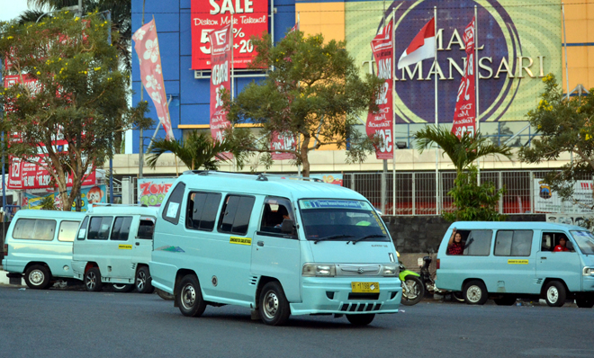
Angkot Jalur 1
Informasi tentang jalur angkot nomor 1
-
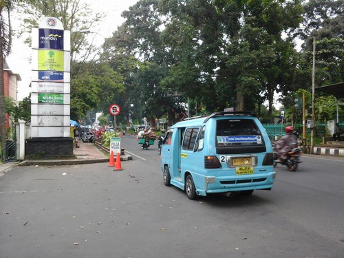
Angkot Jalur 2
Informasi tentang jalur angkot nomor 2
-
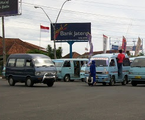
Angkot Jalur 3
Informasi tentang jalur angkot nomor 3
-
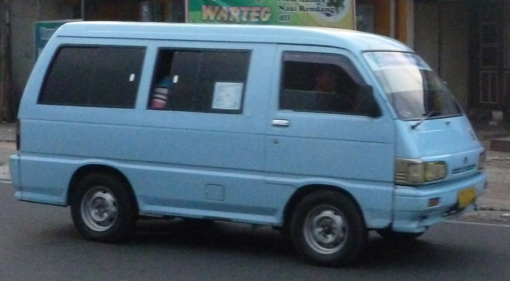
Angkot Jalur 4
Informasi tentang jalur angkot nomor 4
-
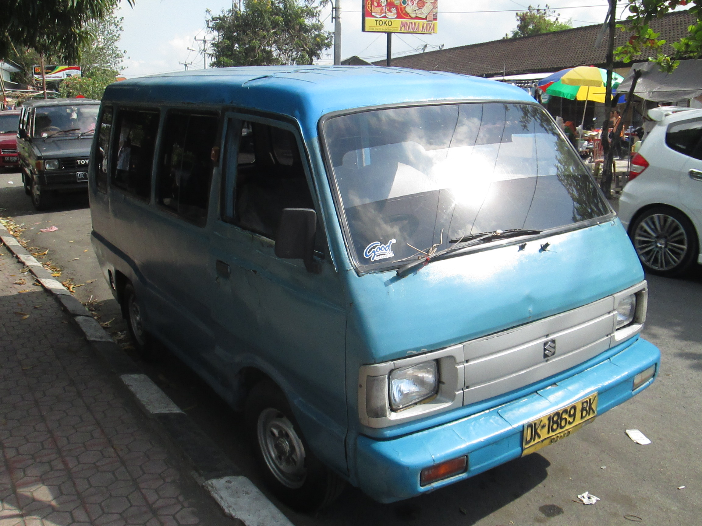
Angkot Jalur 5
Informasi tentang jalur angkot nomor 5
-
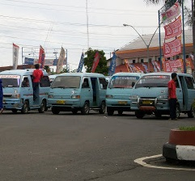
Angkot Jalur 6
Informasi tentang jalur angkot nomor 6
-

Angkot Jalur 7
Informasi tentang jalur angkot nomor 7
-
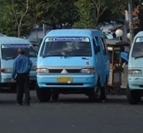
Angkot Jalur 8
Informasi tentang jalur angkot nomor 8
-
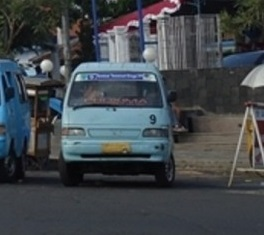
Angkot Jalur 9
Informasi tentang jalur angkot nomor 9
-
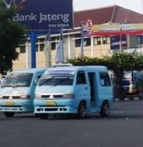
Angkot Jalur 10
Informasi tentang jalur angkot nomor 10
-
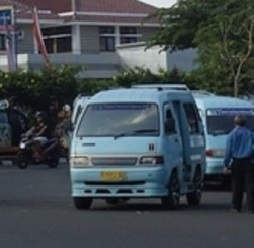
Angkot Jalur 11
Informasi tentang jalur angkot nomor 11
-

Angkot Jalur 12
Informasi tentang jalur angkot nomor 12
-
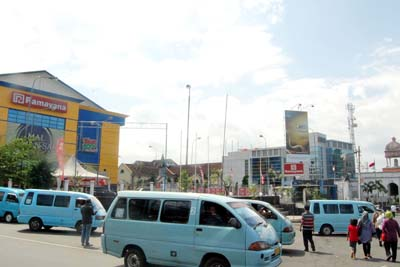
Angkot Jalur 13
Informasi tentang jalur angkot nomor 13
-
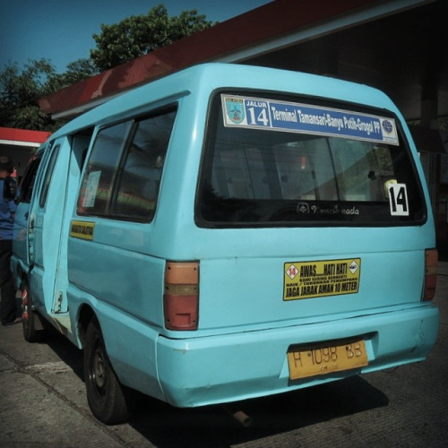
Angkot Jalur 14
Informasi tentang jalur angkot nomor 14
-
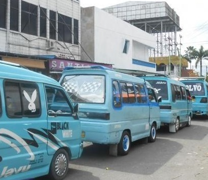
Angkot Jalur 15
Informasi tentang jalur angkot nomor 15
-

Angkot Jalur 16
Informasi tentang jalur angkot nomor 16
Muhammad Alfian Faiz 672012173 © 2015